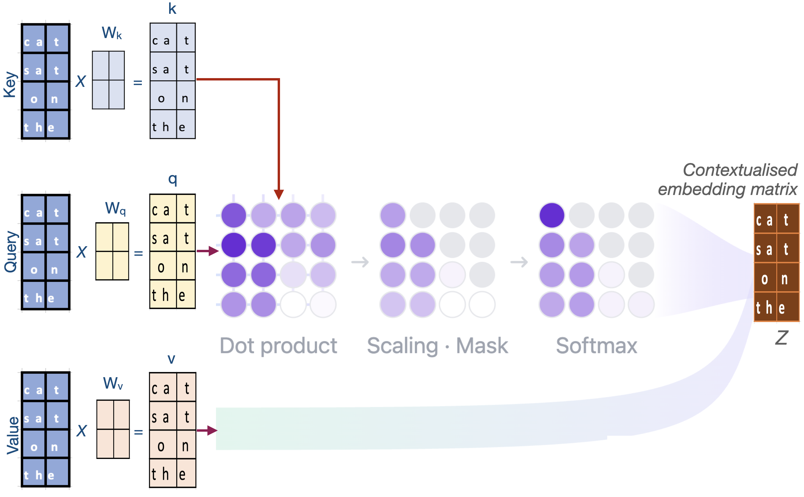

Building Blocks of GPT-2 LLM
Introduction
This tutorial is designed to
Explore the architecture of LLMs with a special focus on GPT-2 model
Introduce fundamental components of LLM (i.e., building blocks of LLM architecture)
Provide overall understanding of basic LLM architecture and link to resources that help readers gain deeper comprehension of each of the component
Objective
Understand why each building block (key component) of a LLM important
Understand how these building blocks work
Understand the dataflow and data parallelization of LLMs
At the end of the tutorial, learners will gain knowledge to interpret the processes that enable LLMs to predict the next word from a sequence of input words.
Prerequisites
Prerequisites
Basic understanding of Deep learning concepts and methods
Python programming
Basic understanding of PyTorch implementation
Introduction to Large Language Models (LLMs)
Objectives
Understand:
Why the filed of language modeling needed LLMs?
What are LLMs?
How do LLMs differ from other machine learning approaches?
Language modeling (LM)
LM was introduced in early 1980s with the introduction of Recurrent Neural Networks (RNNs)
With the advances in the field of LM, more advance techniques to RNNs were introduced to
preserve gradients and maintain information (1997-2014; Gating mechanisms)
handle long-term memory (2015; Attention for RNNs)
manage variable-length input output sequences (2014; Encoder-decoder for RNNs)
Why does the LM field needs LLMs?
RNNs process inputs sequentially and the attention mechanism was not build into the core architecture
RNNs are slow and lead to scalability challenges
Transformer technology introduced in the paper “Attention Is All You Need” addressed this limitations in Modern RNNs
Transformer technology (therefore LLMs) eliminate sequential dependency:
all positions can be computed in parallel
Scalable model training and inference
LLMs
Transformer-based neural networks with large number of parameters (billions to trillions) that employ self-attention mechanisms and trained on vast amounts data (billions to trillions of tokens)
LLMs vs other ML approaches
Behavior of traditional ML approaches are specifically tied to the training objectives
LLMs exhibits capabilities that were not explicitly trained
i.e., Simple training objectives lead to complex capabilities
e.g., LLM’s ability to translate despite never being specifically trained for translation
These capabilities are referred “Emergent Behavior” of LLMs
This complexity emerges from:
Large scale + rich data + powerful architecture
Emergent mechanism is still not fully understood
GPT - Generative Pretrained Transformer model
Objectives
Understand:
What is GPT?
What are the main components (building blocks) of GPT-2 model?
Generative: The model can generate tokens auto-regressive manner (generate one token at a time)
Pretrained: Trained on a large corpus of data
Transformer: The model architecture is based on the transformer, introduced in the 2017 paper “Attention is All You Need” (Self-Attention Mechanism)
GPT-2
Original publication: “Language Models are Unsupervised Multitask Learners”
GPT-2 original publication lists four models
Smallest GPT-2 model:
17 million parameters; 12 transformer blocks; Model dimensions: 768
Largest GPT-2 model:
1542 million parameters; 48 transformer blocks; Model dimensions: 1600

Key components of GPT-2 model
Tokenizer
Embedding layer
Transformer block
Self-attention layer
Feedforward neural network
Language modeling head
Introduction to tokenization
Objectives
Understand:
What is tokenization?
Why it is important?
How tokenizer process input test
Tokenizers
What is tokenization?
Tokenizers take text as input and generate a sequence of integer representations of input text
Why it is important?
This serves as the foundation for converting text to numerical representations that deep learning models can process
Text to sub-word units
Tokenizers process these input text by converting them into discrete sub-word units
i.e, Split input test in to discrete sub-word units
These “discrete sub-word units” are tokens
Token are mapped to corresponding Token IDs using the model vocabulary
Tokenization step-by-step
Tokenizer accepts text
cat sat on theas inputSplit test into words:
cat,sat,on,theTokenizer split text into sub-words. In this case, sub-words from the tokenizer are equal to words in the text
Tokenizer uses model’s vocabulary as a lookup table to map tokens to integer IDs
Vocabulary: A dictionary of unique tokens and unique numerical identifiers assigned to each token (Token ID)
This provides a consistent mapping system that converts variable-length text into fixed numerical representations
Return corresponding token-IDs of the tokens from input text
Vocabulary is build from training data by mapping each unique token to a token ID, with special tokens added to handle unknown words and document boundaries, enabling LLMs to process diverse text inputs effectively. The vocabulary size is managed to balance expressiveness with computational efficiency
GPT-2 tokenizer
Text to Token-IDs
from transformers import AutoTokenizer
tokenizer = AutoTokenizer.from_pretrained("gpt2")
print(f"Length of the vocabulary: {len(tokenizer)}")
sentence = "cat sat on the"
token_ids = tokenizer.encode(sentence)
print(f"Token IDs of the sentence '{sentence}': {token_ids}")
decoded_sentence = tokenizer.decode(token_ids)
print(f"Decoded sentence: {decoded_sentence}")
Text to subword units
summarization_token_ids = tokenizer.encode("summarization")
print("Token IDs for word `summarization`:", summarization_token_ids)
print("Mapping of tokens to token IDs:")
for token_id in summarization_token_ids:
print(f"'{tokenizer.decode(token_id)}' -> {token_id}")
Output
Text to Token-IDs
Length of the vocabulary: 50257
Token IDs of the sentence 'cat sat on the': [9246, 3332, 319, 262]
Decoded sentence: cat sat on the
Text to subword units
Token IDs for word `summarization`: [16345, 3876, 1634]
Mapping of tokens to token IDs:
'sum' -> 16345
'mar' -> 3876
'ization' -> 1634
Introduction to embedding
Objectives
Understand:
What is embedding?
Why it is important?
How does the embedding layer in LLMs process tokens?
Token embedding
What is token embedding?
Token embedding is the process of converting discrete tokens (specifically token-IDs) into vectors
These vectors can be represented in a high-dimensional space
Token ID -> vector with length
N(points in N-dimensional space)
Representing tokens in a high-dimensional space enables to effectively capture complex patterns and relationships
What token embedding is important?
Token-IDs are just arbitrary integers assigned during tokenization that do not have mathematical relationship between these integers
Tokens are discrete numerical labels with no geometric or relational structure
Token embedding convert these numerical labels to structured representations - vectors (points in a high-dimensional space) in a way that captures the relationships between tokens
In this high-dimensional space, semantically related tokens like “dog”, “cat”, “animal” cluster together
This structure is learned during model training process so that words with similar contextual roles have similar vector representations (similarity between vectors represent relationships between tokens)
Demo
Explore token embeddings (Word2Vec embeddings):
Word2Vec embedding was widely used before the introduction of LLM technology
 Figure shows that the words with similar roles in natural language cluster together when represented in high-dimensional space
Figure shows that the words with similar roles in natural language cluster together when represented in high-dimensional space
Python implementation
import gensim.downloader as api
from sklearn.decomposition import PCA
import matplotlib.pyplot as plt
from mpl_toolkits.mplot3d import Axes3D
# Download and load the pre-trained Google News model
wv = api.load('word2vec-google-news-300')
print(f"Dimensions of 'king' embeddings: {wv['king'].shape}")
print(f"First 10 elements of 'king' embeddings: {wv['king'][:10]}")
similar_words = wv.most_similar('king', topn=3)
[print(f"{word}: {similarity:.4f}")for word, similarity in similar_words]
print(similar_words)
def get_3d_projections(word_list, wv):
# Extract embeddings for the given words
print("Word List:", word_list)
embeddings = [wv[word] for word in word_list]
# Apply PCA to reduce dimensions to 3D
pca = PCA(n_components=3)
projections = pca.fit_transform(embeddings)
return projections
def plot_3d_projections(projections, words):
fig = plt.figure(figsize=(8, 6))
ax = fig.add_subplot(111, projection='3d')
for i, word in enumerate(words):
x, y, z = projections[i]
ax.scatter(x, y, z, label=word)
ax.text(x, y, z, word, fontsize=10)
ax.set_title("3D PCA Projection of Word2Vec Embeddings")
ax.set_xlabel("PC1")
ax.set_ylabel("PC2")
ax.set_zlabel("PC3")
#plt.legend(loc='upper left')
#plt.tight_layout()
plt.show()
words = [word for word, _ in similar_words]
words.extend(["software", "internet", "web" ])
reduced_embeddings = get_3d_projections(words, wv)
plot_3d_projections(reduced_embeddings, words)
Token embeddings in LLMs
Tokenizer in GPT-2 smallest model has a vocabulary of 50257 tokens
This GPT-2 tokenizer maps tokens to integers 0-50256 with no mathematical relationship in those assignments
For example, tokenizer maps input -
cat sat on theto tokens[9246, 3332, 319, 262]that do not have inherent relationship between these numbers themselvesToken embeddings convert these arbitrary Token-IDs into dense vectors in a continuous space of 768 dimensions
Now
cat sat on thearen’t just different numbers—they’re points in a high-dimensional space where the similarity between vectors has meaningCapturing semantic meaning through token embeddings is learned during LLM pre-training process (detailed later)
GPT-2 Token embeddings: Step-by-Step Breakdown
Initiate a learnable matrix (dimensions
[vocab_size × embedding_dim])Each row represents one token’s embedding vector
Initiate the matrix with small random values (e.g., -2.84 to 1.58) to break symmetry
if all embeddings were identical, tokens couldn’t differentiate during training
As the model processes training examples, it makes predictions using these random embeddings
Prediction errors generate gradients that flow back through the network to the embedding layer
Token embeddings are optimize through backpropagation (Tokens appearing in similar contexts receive similar updates)
Through thousands of iterations in the pre-training process, random vectors evolve into meaningful representations where “cat” and “dog” cluster together
The final optimized embeddings encode semantic relationships learned entirely from the training data patterns
Explore LLM token embeddings
Embedding Dimensions:
from transformers import AutoModelForCausalLM
model = AutoModelForCausalLM.from_pretrained("gpt2",)
# Access the word token embedding layer
wte = model.transformer.wte
# Get vocabulary size and embedding dimension
print(f"Vocabulary Size: {wte.num_embeddings}; Embedding Dimension: {wte.embedding_dim}")
# The embedding matrix is stored in the 'weight' attribute
print(f"Shape of the embedding matrix: {wte.weight.shape}")
LLM Embedding of made-up words:
text_rand = "rand_xyz"
rand_token_ids = tokenizer.encode(text_rand)
print(f"Token IDs for text '{text_rand}': {rand_token_ids}")
print(f"Decoded text: {tokenizer.decode(rand_token_ids)}")
print()
# Use evaluation mode and not gradient calculation (training)
with torch.no_grad():
rand_token_embeddings = wte(torch.tensor(rand_token_ids))
print(f"Shape of the random token embeddings: {rand_token_embeddings.shape}")
print()
for i in range(len(rand_token_ids)):
print(f"Token {i}: {tokenizer.decode(rand_token_ids[i])} -> {rand_token_ids[i]};\n\tEmbeddings (first 5): {rand_token_embeddings[i][:5]}")
Output
Embedding Dimensions
Vocabulary Size: 50257; Embedding Dimension: 768
Shape of the embedding matrix: torch.Size([50257, 768])
LLM Embedding of made-up words
Token IDs for text 'rand_xyz': [25192, 62, 5431, 89]
Decoded text: rand_xyz
Shape of the random token embeddings: torch.Size([4, 768])
Token 0: rand -> 25192;
Embeddings (first 5D): tensor([-0.0456, -0.1112, 0.2527, 0.0098, -0.0464])
Token 1: _ -> 62;
Embeddings (first 5D): tensor([-0.0073, -0.0894, 0.0005, 0.0701, -0.0090])
Token 2: xy -> 5431;
Embeddings (first 5): tensor([-0.1123, -0.0957, 0.1115, -0.0743, 0.0958])
Token 3: z -> 89;
Embeddings (first 5D): tensor([-0.0141, -0.0427, 0.0941, -0.1052, 0.0594])
Position embeddings
Token embeddings process (converting unstructured token-ids to dense vectors) help capture relationships between tokens
Token embeddings process treats all positions equally
Token embedding alone makes models unable to distinguish token order without position information
Unable to distinguish between “dog bites man” and “man bites dog”
Position embeddings injects position information to embedding vectors
Embedding layer of LLMs
Token embeddings convert discrete token IDs into vector representations through a learnable matrix
Positional embeddings added to inject sequence order information to LLM embeddings
Embedding vectors (combined token and position embeddings) are parses to the next layer of the LLM - transformer layer/block
Source: transformer-explainer
Demo
Token and position embeddings:
Steps in the following script:
Tokenize input text
bank is near the river bankPass input to token and position embeddings
Calculate the similarity between 1st and last token
import torch
text_1 = "bank is near the river bank"
token_ids = tokenizer.encode(text_1)
for i in range(0,len(token_ids)):
print(f"Token {i}: {tokenizer.decode(token_ids[i])} -> {token_ids[i]}")
wte = model.transformer.wte # Token embedding
wpe = model.transformer.wpe # Position embedding
bank_1_id = token_ids[0]
wte_bank_1 = wte(torch.tensor(bank_1_id))
wpe_bank_1 = wpe(torch.tensor(0))
bank_2_id = token_ids[-1]
wte_bank_2 = wte(torch.tensor(bank_2_id))
wpe_bank_2 = wpe(torch.tensor(1))
cosine_sim = torch.nn.functional.cosine_similarity(
wte_bank_1 + wpe_bank_1,
wte_bank_2 + wpe_bank_2,
dim=0
)
print(f"Similarity: {cosine_sim.item():<.4f}") # Less than 1.0 - they're different!
The contextualization happens through the Transformer layers of the LLM by updating vector embeddings
Transformer update vectors from embedding layer to reflect the attention patterns that capture semantic relationships like “river” → “bank” (as in riverbank)
Output
LLM Embedding
## Notice the token 0 - "bank" and " bank" (with leading space)
Token 0: bank -> 17796
Token 1: is -> 318
Token 2: near -> 1474
Token 3: the -> 262
Token 4: river -> 7850
Token 5: bank -> 3331
Similarity: 0.5472
Transformer blocks
Objectives
Gain a basic understanding of:
Transformer technology and why it is important?
Transformer block and its main components?
Limitations in traditional LM
RNN based traditional LM failed to track long-range dependencies like understanding how a word at the start of a paragraph relates to one at the end
RNN based models that processed words one by one (not scalable)
Ambiguity Resolution: Can’t differentiate specific linguistic problems like determining what “it” refers to in several sentences
Transformer technology
Transformer technology was introduced in the paper “Attention Is All You Need” to address several limitations in RNN based language modeling (LM)
Limitations and solutions
Limitation |
Solution |
|---|---|
Long-range dependencies |
Contextual Understanding via self-attention mechanism |
not scalable |
Parallel Processing of tokens |
specific linguistic problems |
Ambiguity Resolution via self-attention mechanism |
Why Is Transformer technology important?
Scalability:
Allows for massive scaling (in terms of parameters and training data size)
Leading to the “Large” in LLMs.
Architectural versatility:
The same underlying transformer block architecture is used across various state-of-the-art models (like GPT, Llama, and BERT)
Versatility performance/behaviour:
Enables models to generate coherent, contextually appropriate text and perform a wide range of tasks—from translation to coding—that were previously impossible for computers
Effective for both understanding and generating human language
What is a Transformer block?
Transformer block is the fundamental architectural unit of a LLMs
LLMs - constructed by stacking these blocks on top of one another
Each block processes the input it receives from the previous layer and passes the result to the next
Stacked transformer blocks progressively refining the model’s understanding of the text

Main Components of a transformer block
Attention mechanism
Feed Forward neural Network
Self-attention mechanism
Objectives
Gain a basic understanding of:
Self-attention mechanism
How attention weights are calculated & context vector is generated?
What is self-attention mechanism?
Self-attention: create a new, enriched representation (context vector) by incorporating information from all token embeddings in the sequence
Two main steps mechanism:
Scoring relevance (“attending to”/”considering” all tokens) & calculate attention weights (relevance scores)
Combine attention weights and generate context vector (new enriched representation)
Context vector (enriched representation):
Captures the specific meaning of a token embeddings within its surrounding embeddings
Allow the model to understand relationships and dependencies between words, regardless of how far apart they are in the sentence

Self-attention with Q, K, V weight matrix
 Source (modified): transformer-explainer
\(𝑄\), \(𝐾\) and \(V\): matrices: Representation of input token embeddings
\(𝑄_{𝑚𝑎𝑡𝑟𝑖𝑥}\): Queries
Token representations that are used as queries in relevance scoring (embeddings that are used as queries for the “comparison”)
\(𝐾_{𝑚𝑎𝑡𝑟𝑖𝑥}\): Keys
Token representations that get compared to queries
\(V_{𝑚𝑎𝑡𝑟𝑖𝑥}\): Values
Token representations that are used to combine attention weights and generate context vector
Calculate attention weights
Attention weights: \(softmax(\frac{QK^T}{\sqrt{d_k}})\)
Main Stages
Stages 1: Dot product to calculate attention score (matrix manipulation: \({QK^T}\)):
Provides unscaled attention score (initial relevance scores) - A higher dot product means the two tokens are more aligned (similar context)
Indicates how aligned vectors in \(𝑄_{𝑚𝑎𝑡𝑟𝑖𝑥}\) with vectors in \(𝐾_{𝑚𝑎𝑡𝑟𝑖𝑥}\)
i.e., how much focus \(𝑄_{𝑚𝑎𝑡𝑟𝑖𝑥}\) vectors should put on \(𝐾_{𝑚𝑎𝑡𝑟𝑖𝑥}\) vectors
Matrix manipulation enables simultaneously compare all the vectors in \(𝑄_{𝑚𝑎𝑡𝑟𝑖𝑥}\) to \(𝐾_{𝑚𝑎𝑡𝑟𝑖𝑥}\)
Stage 2: Scaling: Scaled attention score
Help avoid high-values in attention score and stabilize gradients
Stage 3: Calculate “Attention weights”
Apply
softmaxfunction to scaled attention scores and calculate “Attention weights”softmaxfunction makes values to be positive and sums up 1 (convert to probabilities)i.e., Convert attention scores to attention weights (probabilities) what shows “relative importance” \(𝑄_{𝑚𝑎𝑡𝑟𝑖𝑥}\) vectors put on \(𝐾_{𝑚𝑎𝑡𝑟𝑖𝑥}\) vectors

Generate context vector
Multiply these attention weights by the Value vectors (\(V_{𝑚𝑎𝑡𝑟𝑖𝑥}\)) and produce final context vector

\(𝑊_{𝑡ℎ𝑒}\): To what extent token “the” attend to (focus on) each input token (attention weights)
\(𝑉_{𝑚𝑎𝑡𝑟𝑖𝑥}\): Representation of input token embedding matrix

{kind=link}
{kind=link}
Who is the tutorial for?
This tutorial is for individuals with deep learning knowledge and want to have a basic overview of the architecture of LLMs. The tutorial is designed not to dive deep into each component but to interpret the underline processes of LLM’s key components.